|
”Locomotion Capabilities of a Modular Robot with Eight Pitch-Yaw-Connecting Modules”. Clawar. Bruselas. Septiembre 2006. |
|
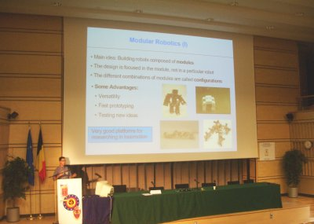 |
Título: “Locomotion Capabilities of a Modular Robot with Eight Pitch-Yaw-Connecting Modules”.
Actividad: Exposición del artículo con el mismo nombre. Artículo disponible aquí.
Duración: 20 minutos
Evento: 9th International Conference on Climbing and Walking Robots. CLAWAR
Lugar: Royal Military Academy
Fecha: 13 de Septiembre de 2006
Ponente:
In this paper, a general classification of the modular robots is proposed, based on their topology and the type of connection between the modules. The locomotion capabilities of the sub-group of pitch-yaw connecting robots are analyzed. Five different gaits have been implemented and tested on a real robot composed of eight modules. One of them, rotating, has not been previously achieved. All gaits are implemented using a simple and elegant central pattern generator (CPG) approach that simplify the algorithms of the controlling system.
|
Descargas |
|
clawar-2006-hypercube.odp (3,6 MB) |
Presentación para OpenOffice 2.0 |
|
clawar-2006-hypercube.pdf (1,5 MB) |
Presentación en PDF |
Se conceden permisos para usar, modificar y/o distribuir esta presentación, siempre que se mantenga esta nota.
Artículo: "Locomotion Capabilities of a Modular Robot with Eight Pitch-Yaw-Connecting Modules”, presentado en el Clawar. Bruselas. Septiembre 2006.
El Clawar de este año se celebraba en Bruselas, del 12 al 14 de Septiembre de 2006. Tenía muchas ganas de ir por varios motivos. Uno era presentar mi último robot, Hypercube (vídeos), en el que había estado trabajando durante mi estancia de tres meses en Hamburgo. El otro era ver a mi amigo Houxiang Zhang y poder hablar tranquilamente con él.
Durante mi estancia en Hamburgo, además, modificamos los módulos Y1, que son los que utilizo para mis robots modulares. Creamos una versión de aluminio mucho más resistente y fácil de montar que la anterior. Houxiang mandó a fabricar una tirada de 10 unidades en China. Los módulos habían llegado a Hamburgo hacía un mes, pero yo todavía no los había podido ver con mis propios ojos.
El lunes 11 de septiembre aterricé en Bruselas, y una hora después lo hacía Houxiang. Aproveché para comer en el aeropuerto y esperar a que llegase. Luego nos fuimos al hotel. En la foto de la izquierda estamos Houxiang, el portátil, los módulos y yo. Estuvimos montando un par de módulos para hacer pruebas. Yo los controlé a través de la Skypic y de mi portátil. ¡¡Funcionaban genial!!. En la foto de la derecha se pueden dos configuracicones mínimas de tipo PP: una con los módulos Y1 y la otra con los nuevos módulos ZG (aunque Houxiang prefiere llamarlos GZ).
Cuando acabe mi tesis sobre robótica modular, tengo pensado preparar talleres de robótica modular con estos nuevos módulos. Pero para eso todavía queda por lo menos un año ;-)
|
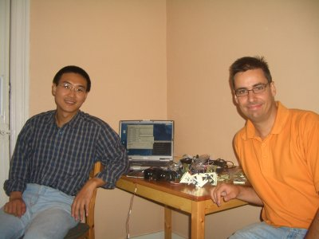 |
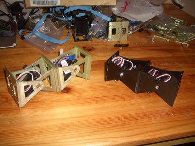 |
El congreso empezó el martes 12 de septiembre. Y por la tarde, un poco antes de terminar las sesiones, nos fuimos a hacer turismo por Bruselas. En la foto de la izquierda estamos Houxiang y yo en el parque Jugelpark, muy cerca de la Royal Military Academy donde era el congreso.
Esa misma noche tuvimos la cena de gala en la propia academia militar (foto de la derecha). El que está sentado al lado de Houxiang es Andreas Strack , al que ya conocía de la visita a la universidad de Bremen que hice con Alejandro Alonso.
|
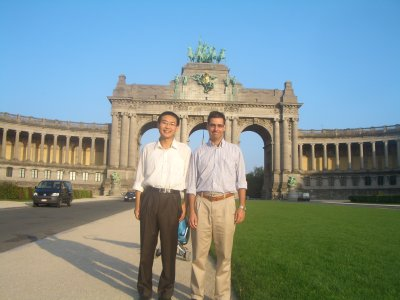 |
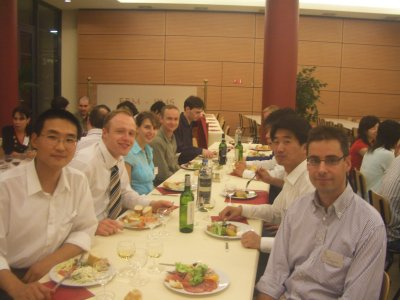 |
El día siguiente, Miércoles, era cuando nos tocaba a Houxiang y a mi tener nuestras ponencias. Esta vez yo estaba muchísimo menos nervioso que las veces anteriores. Pasar tres meses en hamburgo espabila a cualquiera :-). El sitio del congreso era una academia militar. Estaba llena de cañones antiguos de guerra, como en el que estamos Houxiang y yo en la foto de la izquierda.
Durante el congreso tuve la oportunidad de conocer a Alessandro Crespi, del EPFL, creador del robot Amphibot. Y claro, me hice fotos con él :-). En la derecha estamos Alessandro y yo.
|
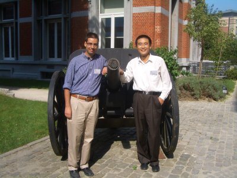 |
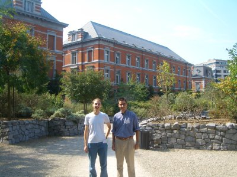 |
Otro de los conocidos era Katrina Daltorio, del Biologically inspired robotics laboratory, que también habíamos conocido Alejandro y yo en el Clawar 2005 en Londres. En la izquierda estamos en una foto de grupo.
Por tarde me llegó la hora (foto de la derecha). Me tocó en la sala prenaria. Menos mal que todo pasó rápido y las preguntas que me hicieron las conseguí comprender, cosa que no logré el año anterior :-)
|
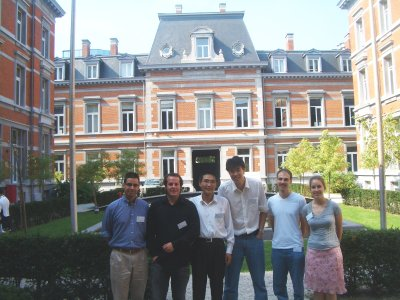 |
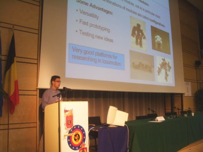 |
Justo después de mi charla, Houxiang tuvo la suya, en una de la aulas pequeñas en la planta inferior (foto de la derecha). Y después de eso... ¡ya estábamos de vacaciones! Aproveché para hacer algunas demostraciones de Hypercube. En la foto de la izquierda está Hypercube en el suelo, al lado de otros dos robots.
|
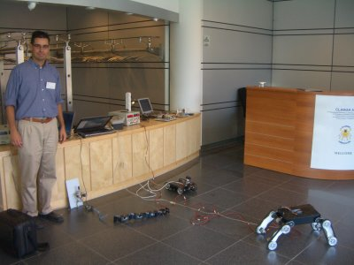 |
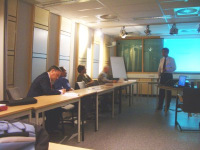 |
|
|